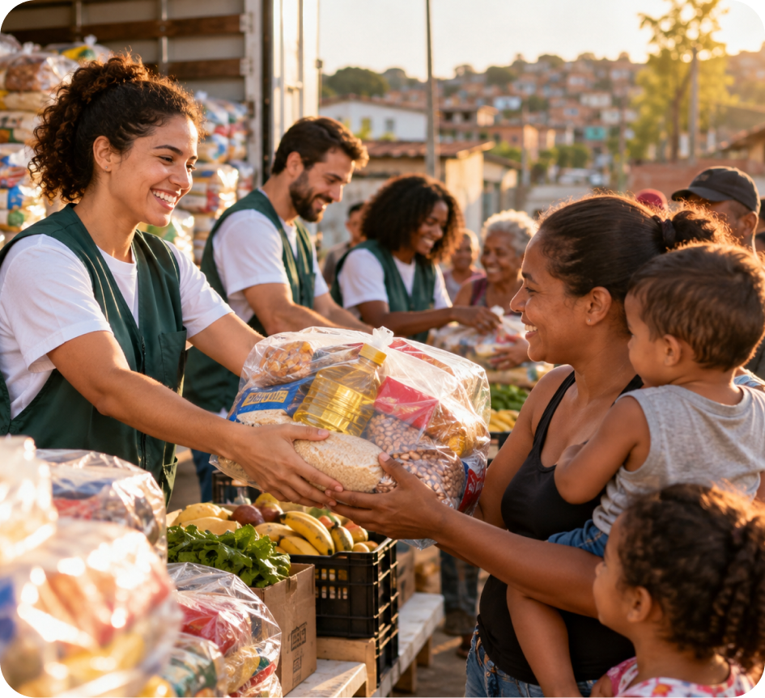
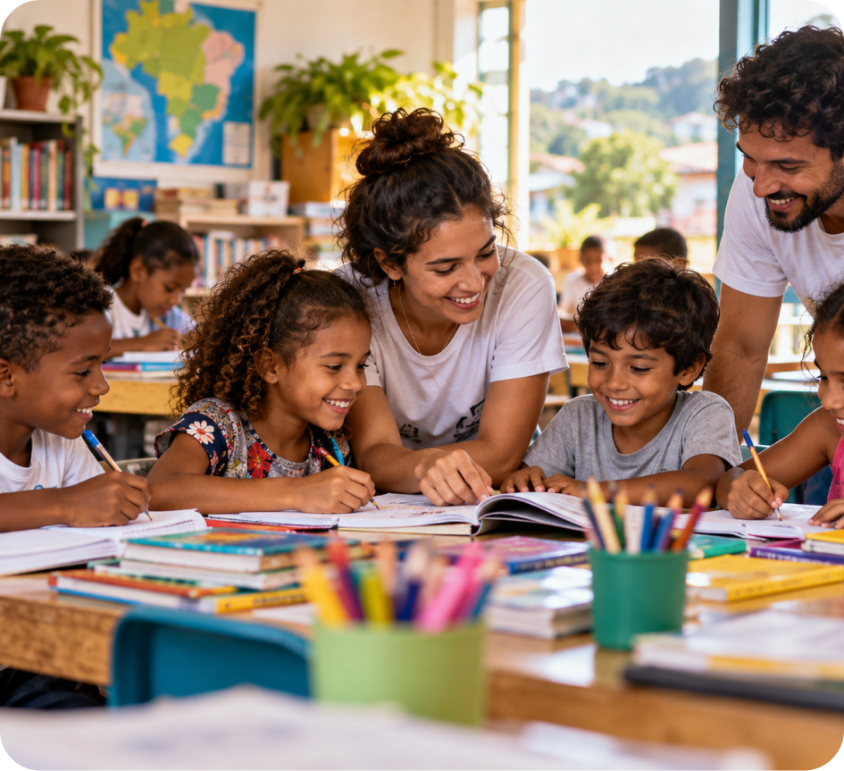
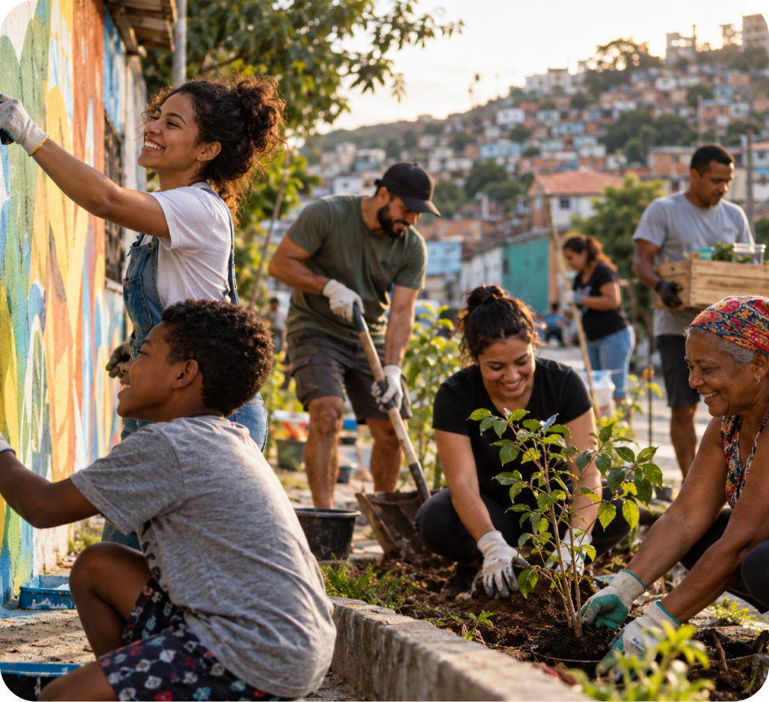

Alimentação para Todos
O projeto alimentação para Todos realiza campanhas de arrecadação e distribuição de alimentos para famílias em situação de vulnerabilidade. Por meio da colaboração de voluntários e parceiros, buscamos contribuir para que mais famílias tenham acesso a alimentos essenciais.
Conhecer o projeto
Caminhos da Educação
O Caminhos da Educação promove ações de apoio a crianças e adolescentes por meio da arrecadação de materiais escolares e atividades educacionais. Nosso objetivo é incentivar o aprendizado e ampliar oportunidades através da educação.
Conhecer o projeto
Comunidade em Ação
O projeto Comunidade em Ação reúne voluntários em atividades sociais voltadas ao fortalecimento das comunidades. As ações incluem campanhas solidárias, atividades comunitárias e iniciativas de apoio às famílias.
Conhecer o projeto